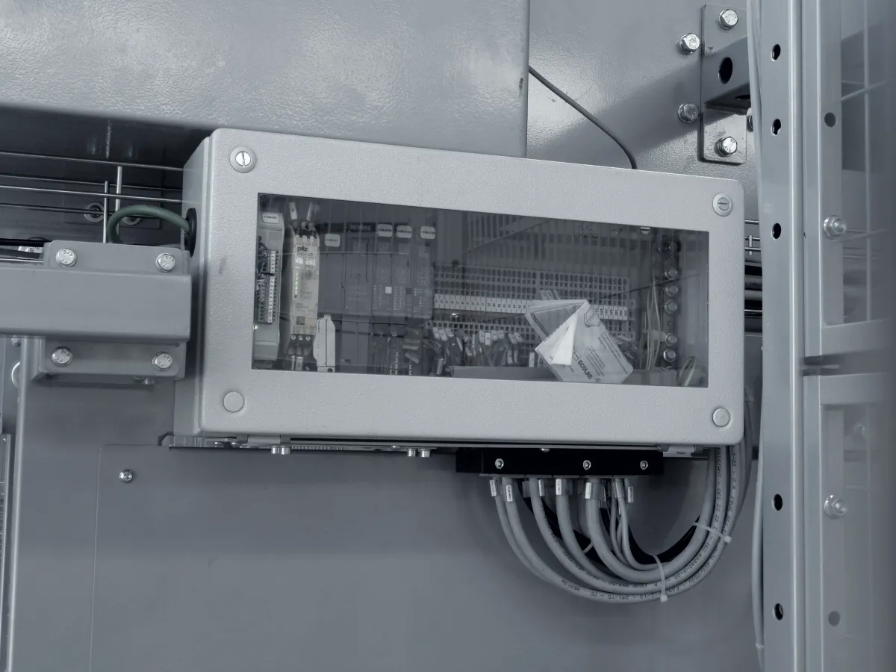
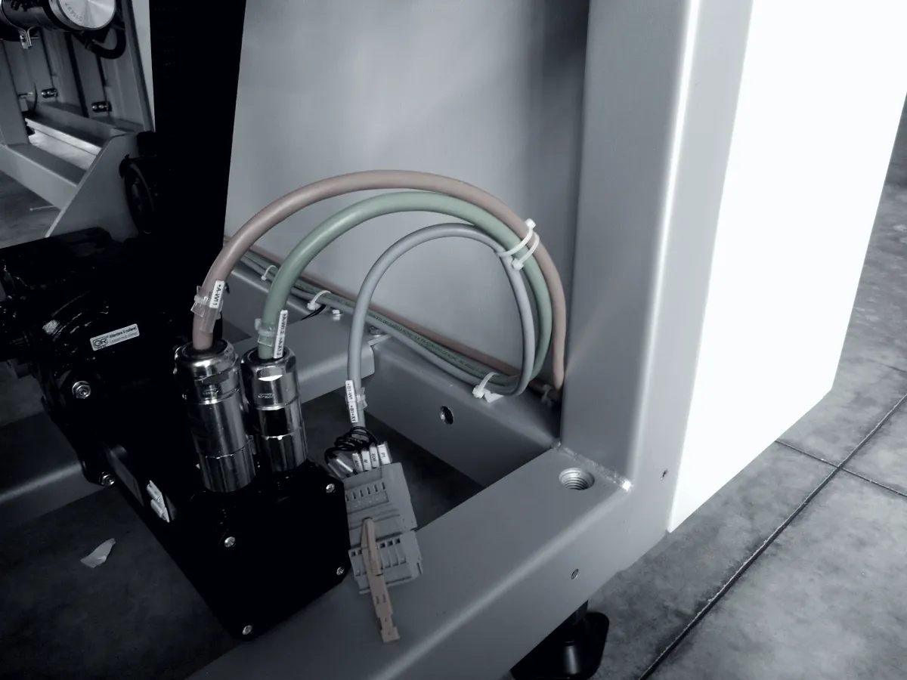
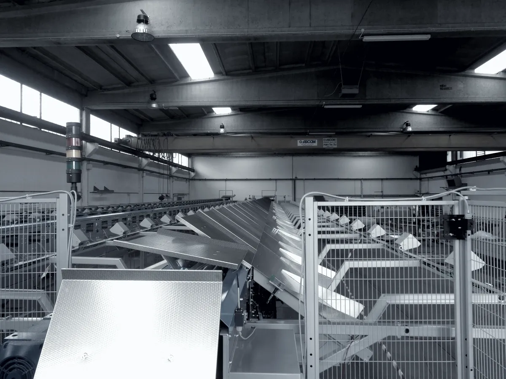
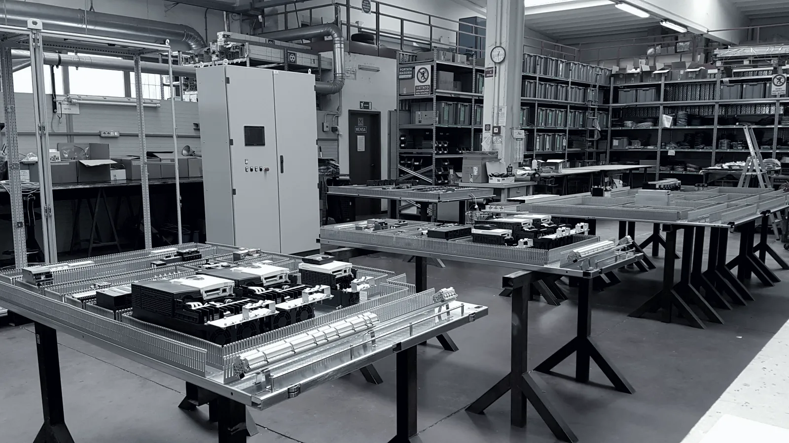
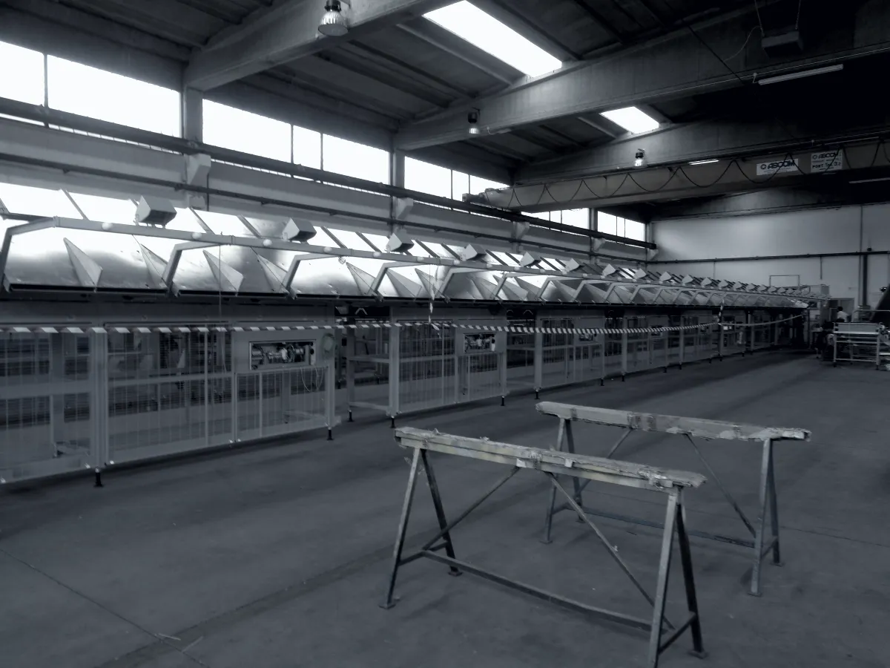
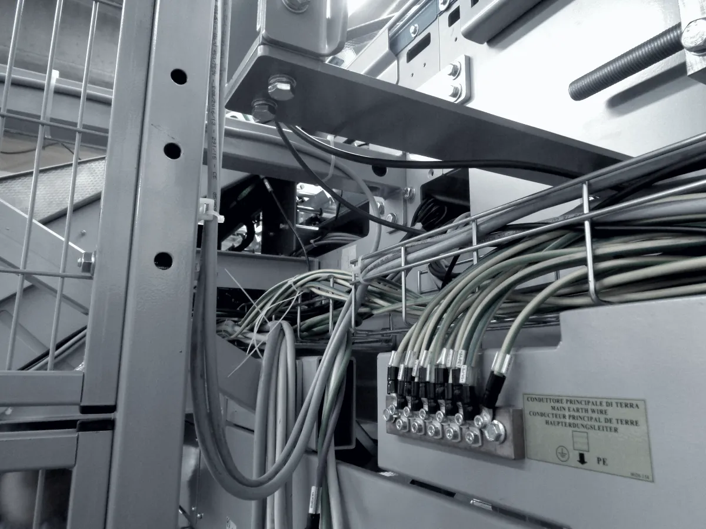
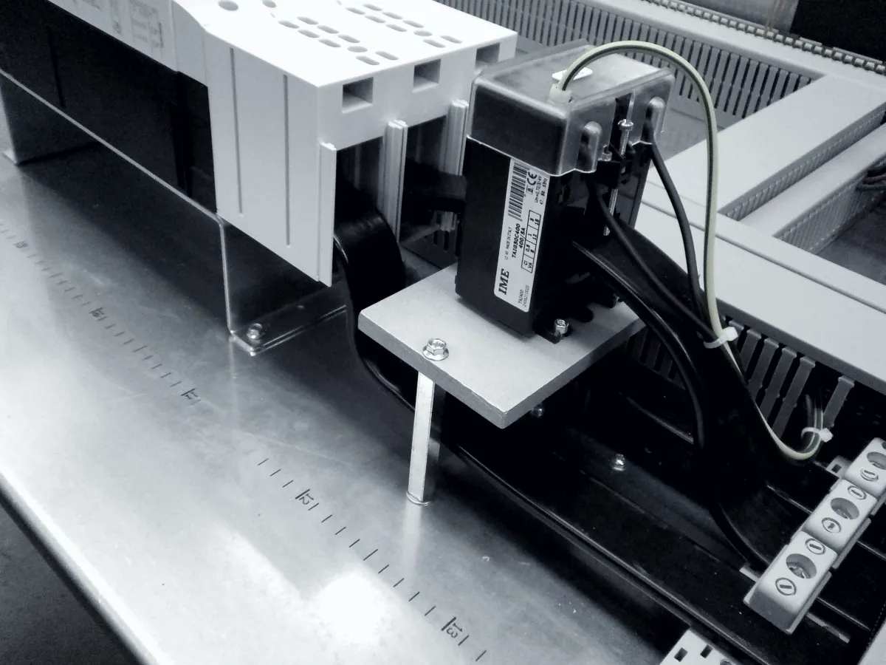
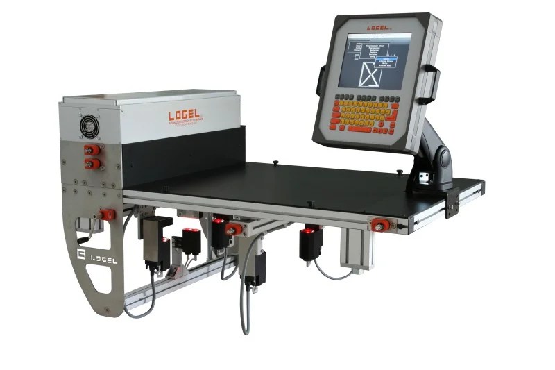
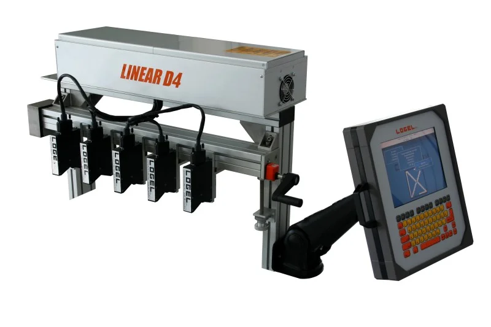

Quadri elettrici e bordo macchina
Quadri di comando piccoli e grandi, su progetto nostro o del cliente. Cablaggi bordo macchina, strutturati e di intere linee.
Elettromeccanico →Progettiamo e costruiamo quadri elettrici, cablaggi bordo macchina, schede elettroniche e software PLC per chi costruisce macchine. A Castelnuovo Rangone, dal 1979.
Partiamo dallo schema del cliente, oppure lo disegniamo noi. Foriamo armadi e piastre sul centro di lavoro Rittal Perforex, cabliamo, scriviamo il software, collaudiamo e lo accendiamo sulla linea, in Italia o all'estero.
Guarda i passaggi →Con la consociata REM software & automation seguiamo un impianto per intero o solo la parte che vi manca.

Quadri di comando piccoli e grandi, su progetto nostro o del cliente. Cablaggi bordo macchina, strutturati e di intere linee.
Elettromeccanico →
Siemens S7 e TIA Portal, Allen Bradley, Beckhoff, Omron, Saia. Controlli Esa e Siemens, robot ABB, Fanuc e Kuka. Interfacce in C# e Visual C++.
Software →
Progetto in OrCAD e Altium, firmware su microcontrollori NXP e FPGA Lattice, assemblaggio e collaudo nel nostro laboratorio.
Elettronico →
Misuriamo in linea planarità, spessore e diagonali delle piastrelle, con una precisione di ±0,1 mm.
I quattro sistemi →Armadi e piastre lavorati sul Rittal Perforex MT 2101: quote precise e un archivio di ogni lavorazione fatta.
Carpenterie →


Tre postazioni EPLAN, due Pro Panel e due SPAC. Disegniamo schemi, fascicoli costruttivi e gli apparati di test per il collaudo.
Quadri di comando, cablaggi bordo macchina, cablaggi strutturati e di intere linee di lavorazione, costruiti nella nostra officina.
Installiamo e avviamo gli impianti in Italia e all'estero, e dopo la consegna restiamo noi il riferimento per l'assistenza.
Schema elettrico, fascicoli costruttivi e distinta in EPLAN e Pro Panel.
Fori, asole e piastre sul Rittal Perforex, dalle quote del progetto.
Quadri, bordo macchina e cablaggi strutturati, cablati e siglati in officina.
Banchi di test, camera climatica per le prove in temperatura e prove di pre-compliance elettromagnetica.
Installazione e messa in servizio sulla linea del cliente, in Italia e all'estero.

FASE DISEGNO
Linee di scelta, levigatrici e squadratrici: quadri, cablaggi bordo macchina e i sistemi di misura Calibro Planar.
Automazione elettrica ed elettronica per gli impianti di lavorazione del marmo.
Lavoriamo come vostro reparto elettrico esterno: progetto vostro o nostro, quadro consegnato collaudato.
La nostra officina è certificata UL508A: costruiamo quadri industriali conformi per USA e Canada.
I nostri sistemi misurano in linea planarità, spessore e diagonali delle piastrelle, a valle di levigatrici e squadratrici, senza modificare l'impianto.
 Evo-Plan
Evo-Plan
Caliplan D4 Caliplan D4M
Caliplan D4M
Linear D4
ISO 9001:2015Sistema qualità certificato da TÜV Rheinland, dal 2002.
UL508AOfficina abilitata a costruire quadri industriali per USA e Canada.
Mandateci lo schema o raccontateci la macchina: vi risponde un tecnico.